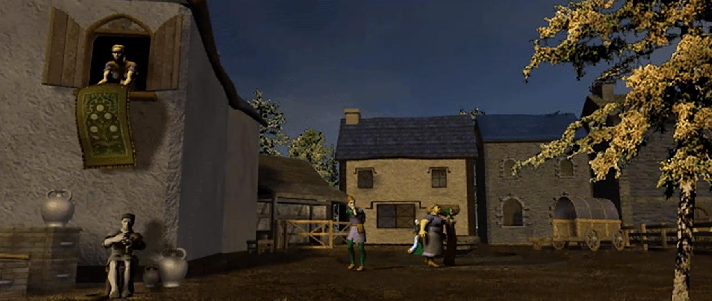
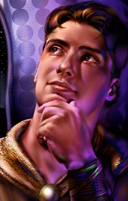
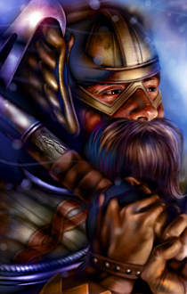
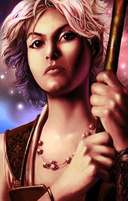

Po dotarciu do Beregostu Imoen natychmiast uznała, że najważniejszym punktem dalszej wyprawy powinny być porządne zakupy. Najpierw zaproponowała znalezienie pokoi w gospodzie Feldeposta, ponieważ od dawna marzyła o gorącej kąpieli. Chwilę później zaczęła wyliczać niezbędne zapasy: nową patelnię w miejsce tej zniszczonej przez Leecha, koce, mydło, oliwę do latarni, zapasowe śledzie do namiotów, nóż myśliwski oraz ubrania.
Wychowanek Goriona przyjął zarzuty z godnością człowieka, który potrafił pokonać hobgobliny, lecz poległ w nierównej walce z kuchennym sprzętem. Sam również nabrał ochoty na odwiedzenie miejscowych sklepów, licząc zwłaszcza na znalezienie jakiejś elfiej biżuterii. Sandrah chętnie dołączyła do wyprawy handlowej i zaoferowała Imoen pomoc w wyborze ubrań. Młoda złodziejka zgodziła się bez wahania, zastrzegając jednak, że wszystko powinno wyglądać równie dobrze jak ona, a kolor różowy pozostaje wyłącznie jej domeną.
Jeszcze przed rozpoczęciem zwiedzania miasta służka Mystry poprosiła Leecha o chwilę rozmowy. Wyznała, że od pewnego czasu niepokoi ją wizja ujrzana tuż przed opuszczeniem rodzinnego domu. W kryształowym odłamku należącym do jej ojca zobaczyła nieznaną kapłankę, prawdopodobnie pochodzącą z dalekiej Północy. Nieznajoma toczyła gwałtowny spór z wyjątkowo nieprzyjemnym magiem, który ostatecznie przemienił ją w kamień. Leech zgodził się pomóc w poszukiwaniach, choć pozostawione przez wizję wskazówki nie należały do szczególnie precyzyjnych. Sandrah zapamiętała jedynie namioty, kupców, chorągwie i tłum charakterystyczny dla wielkiego jarmarku. Nie znała ani nazwy miejsca, ani drogi prowadzącej do niego. Wyglądało więc na to, że drużyna będzie musiała wypatrywać zatłoczonych festynów, na których kamienny posąg kapłanki nikogo przesadnie nie dziwił. Do zdjęcia klątwy potrzebny będzie zwój Przemiany kamienia w ciało. Uzdrowicielka nie miała zapamiętanego odpowiedniego zaklęcia, dlatego zwój należało kupić w jednej ze świątyń. Największe szanse na jego zdobycie dawała Świątynia Pieśni Poranka w Beregostcie albo Świątynia Helma w Nashkel. Leech uznał, że zakup zwoju będzie znacznie prostszy niż przeczesywanie całego Wybrzeża Mieczy w poszukiwaniu skamieniałej nieznajomej, ale od czegoś trzeba było zacząć. Sandrah dodała jeszcze, że w pobliżu posągu dostrzegła wóz objazdowego karnawału. Istniała więc możliwość, że nieszczęsna kapłanka została wystawiona jako osobliwa atrakcja, na której ktoś zarabiał kilka monet od widza. Sama myśl napełniła służkę bogini magii niesmakiem, a jej towarzysza przekonała, że podczas dalszej drogi na południe warto mieć oczy szeroko otwarte (FIND THE PETRIFIED PRIESTESS).
W wolnych chwilach Imoen studiowała księgę znalezioną przy Tarneshu. Jej cierpliwość została w końcu nagrodzona, gdy udało jej się stworzyć artefakt, którego magia trwale zwiększyła jej zręczność. Imoen: Zręczność +1
Na rogatkach Beregostu drużynę powitał Golin Vend 1, który udzielił przybyszom podstawowych informacji o miejscowych sklepach, gospodach i innych przybytkach. Dzięki jego wskazówkom pierwsza wyprawa przez nieznane ulice nie musiała przypominać błądzenia po źle opisanym labiryncie.
Nieopodal Otter O’Forest 2 poprosiła o odnalezienie lekarstwa dla bliskiej jej osoby. Potrzebowała bursztynowego kwiatu rosnącego wyłącznie w miejscach naznaczonych wielką stratą. Według jej informacji odpowiedni okaz kwitł przy starym drzewie w pobliżu kopalni na południu. Kwiat można było zerwać jedynie nocą, co naturalnie czyniło zadanie znacznie mniej wygodnym i zapewne bardziej niebezpiecznym (AMBER FLOWER).
Przed jednym z domów 3 podróżnicy spotkali małą Annie Dudley, wyraźnie zmartwioną nieustannymi kłótniami rodziców. Wewnątrz rzeczywiście w domu panował rodzinny impas (FAMILY QUARREL IN BEREGOST). Małżonkowie spierali się o zaginiony rodowy naszyjnik, którego sprzedaż miała uratować ich dom. Po kilku rozmowach z rodzicami i ich córką wyszło na jaw, że klejnot ukryła sama Annie. Nie chciała dopuścić, aby rodzinna pamiątka została sprzedana i bezpowrotnie utracona. Gdy prawda wyszła na jaw, napięcie opadło, a rodzina zaczęła wreszcie rozmawiać zamiast przekrzykiwać się przez pół domu. Leech postanowił kupić naszyjnik za zawyżoną cenę, po czym podarował go dziewczynce. Pani Dudley odszukała drużynę chwilę później, próbując zwrócić nadwyżkę znalezioną w mieszku. Przybysze wyjaśnili jednak, że była to świadoma pomoc dla rodziny, a nie błąd przy liczeniu monet. Kobieta przyjęła dar z oporami, lecz nie kryła wdzięczności. Reputacja +1
Nieco dalej Alanna 4 poprosiła drużynę o pilną pomoc w ustaleniu, co przydarzyło się jej sąsiadowi, Eltolthowi (BEREGOST: ALANNA’S NEIGHBOUR IN TROUBLE). W jego domu 5, zamiast gospodarza, znaleziono nieagresywnego śluzowca przypominającego zawartość przewróconego kociołka. Imoen z trudem powstrzymywała chichot, choć widok człowieka zmienionego w galaretowatą plamę raczej nie powinien nikogo bawić. Jaheira szybko przywołała ją do porządku, natomiast uzdrowicielka drużyny obiecała zbadać sprawę i znaleźć sposób na przywrócenie nieszczęśnikowi właściwej postaci. Po bliższym przyjrzeniu się śluzowatej substancji odnaleziono notatki należące do przemienionego. Wynikało z nich, że regularnie kupował podejrzane mikstury od handlarza imieniem Tulbor. Tym razem zaoferował klientowi wyjątkowy eliksir, za który zażądał fortuny. Eltolth uznał jednak, że warto zaryzykować, i postanowił go wypić. W tym miejscu zapiski nagle się urywały. Wszystko wskazywało na to, że transformacja nie była dziełem potężnego zaklęcia, lecz skutkiem użycia mikstury zakupionej od niezbyt uczciwego handlarza. Należało odnaleźć Tulbora, ustalić skład eliksiru i zdobyć antidotum. Leech widział już ludzi gotowych zapłacić majątek za cudowne specyfiki, lecz Eltolth był prawdopodobnie pierwszym, który dosłownie rozpłynął się pod wpływem korzystnej oferty.
W domu naprzeciwko 6 drużyna spotkała chłopca wołającego swojego ojca. Ku zaskoczeniu przybyszów wspomnianym „tatusiem” okazał się ogr. Interwencja zakończyła się wprawdzie usunięciem potencjalnego zagrożenia, lecz chłopiec ani trochę nie wyglądał na wdzięcznego. Najwyraźniej więzy rodzinne potrafiły przybierać na Wybrzeżu Mieczy naprawdę zaskakujące formy.
Bestiariusz: *ogr"
Na jednej z ulic Leech został zatrzymany przez Pontaga 7, który ostrzegł go przed nadepnięciem na wielowymiarowego żuka. Problem polegał na tym, że owada nigdzie nie było widać. Starzec wyjaśnił, że postrzega żuki w wielu chwilach jednocześnie, przez co nigdy nie ma pewności, czy obserwuje teraźniejszość, przeszłość, czy coś, co dopiero się wydarzy. Próbował nawet schwytać jeden z okazów, aby udowodnić innym, że nie są wyłącznie wytworem jego wyobraźni. Imoen uznała opowieść za godną jednej z gawęd Winthropa, natomiast przywódca kompanii ostrożnie zasugerował, że rozmówcy może przydać się odpoczynek. Dotknięty Pontag zapewnił, że nic mu nie dolega, pozostawiając drużynę z zagadką owadów istniejących jednocześnie wczoraj, dziś i być może w przyszły czwartek. Towarzysząca mu Miji potwierdziła, że starzec jest jej ojcem i od pewnego czasu opowiada o żukach, innych wymiarach oraz chwilach nakładających się na siebie. Zapewniła, że jest nieszkodliwy, choć odrobinę ekscentryczny. Poprosiła, aby podczas kolejnego spotkania potraktować go łagodnie, i wspomniała, że nocami często można go znaleźć za gospodą Feldeposta. Tam przeszukuje rzędy drzew, licząc na schwytanie jednego z tajemniczych stworzeń. Drużyna postanowiła przyjrzeć się sprawie. Od walki z zabójcami można było przecież czasem odpocząć, tropiąc żuki, które być może jeszcze się nie pojawiły (BEETLES, DREAMS AND AN OLD MAN).
W drodze do gospody przybyszów zamienili parę słów z Seraphiną Whitewood 8, dowódczynią miejscowej Straży Miejskiej, pomocniczej formacji złożonej z mieszkańców Beregostu. Zapewniła, że mogą swobodnie korzystać z miejskich atrakcji, lecz powinni zachować czujność. W ostatnim czasie znacząco wzrosła aktywność Oka Gorgony, osławionej gildii złodziei, która z pospolitej bandy przeistoczyła się w sprawną organizację i przeniknęła niemal do każdej warstwy lokalnej społeczności. Na czele gildii stał Baldwin, zwany „Rzeźnikiem”, człowiek równie przebiegły, co bezwzględny. Dowódczyni przyznała, że potrafi wykorzystywać nawet największy chaos, a działania jego ludzi mogą zwiastować poważniejsze kłopoty. Kapłanka Mystry zaoferowała pomoc, lecz Seraphina wyjaśniła, że walka z tak dobrze zorganizowaną siatką wymaga doświadczenia i znajomości miasta. Zamiast natychmiast wysyłać świeżo przybyłych na polowanie na najniebezpieczniejszego złodzieja w okolicy, poleciła im poznać ulice, obserwować mieszkańców i zwracać uwagę na podejrzane wydarzenia. Leech przyjął radę bez sprzeciwu. Najpierw musiał się dowiedzieć, gdzie można zjeść i przenocować, nie tracąc przy okazji sakiewki.
Przed gospodą Płonący Czarodziej 9 drużyna spotkała Garricka. Bard wynajął ich do ochrony Silke Roseny, utalentowanej artystki, której mieli zagrażać bandyci rzekomo przysłani przez Feldeposta w odwecie za odwołany występ. Kompania zgodziła się zapewnić aktorce ochronę i przeniosła się w pobliże gospody Czerwony Bukiet 10. Tam pojawili się Glayde, Faltis i Tessilan, niosąc klejnoty, które mieli przekazać Silke. Artystka próbowała wykorzystać najemników do ich zamordowania, lecz Leech odmówił wykonania rozkazu bez upewnienia się, kto naprawdę jest winny. Kiedy manipulacja nie przyniosła rezultatu, Silke zaatakowała niedoszłych obrońców i przypłaciła ten błąd życiem. Trzej przybysze podziękowali drużynie za rozsądną decyzję, a Garrick, który zrozumiał, że dał się zwieść urokowi swojej pracodawczyni, poprosił o możliwość dołączenia do kompanii. Najwyraźniej nawet bardowi przydawał się czasem ktoś, kto odróżnia sceniczny dramat od próby morderstwa.

Garrick
Człowiek · Łotrzyk · Praworządny Zły
DODAĆ OPIS.
Drużyna szybko się powiększa i postanowiono że Jaheira i Khalid będą na razie czekać w Pomocnej Dłoni, podczas gdy pozostali weszli do Czerwonego Bukietu 11. Na progu powitał ich Karlat, kolejny zabójca wynajęty do zgładzenia wychowanka Goriona. Starcie zakończyło się podobnie jak wcześniejsze zamachy. Przy ciele napastnika znaleziono kontrakt, z którego wynikało, że cena głowy Leecha wzrosła już do trzystu pięćdziesięciu sztuk złota. Niewielka pociecha, ale przynajmniej ktoś na szlaku doceniał jego rosnącą niezależność.
Pozostawieni NPC: Jaheira i Khalid (Pomocna Dłoń)
Wewnątrz knajpki drużyna odnalazła Tulbora, którego imię pojawiło się w notatkach znalezionych przy przemienionym Eltolthu. Oburzona służka Mystry oskarżyła handlarza o sprzedaż eliksiru zmieniającego człowieka w śluz. Kupiec nie okazał skruchy. Roześmiał się jedynie i stwierdził, że mikstura zadziałała dokładnie tak, jak powinna, a klient sam ponosi winę, ponieważ wypił jej zbyt wiele. Według Tulbora eliksir w niewielkich dawkach chwilowo osłabiał, lecz później zapewniał potężny efekt wzmacniający. Eltolth najwyraźniej uznał, że skoro jedna porcja działa, to cała butelka zadziała jeszcze lepiej. Zadziałała, tyle że zamiast bohatera o nadludzkiej sile powstała galaretowata plama wymagająca pomocy. Kapłanka zażądała antidotum, lecz handlarz wyjaśnił, że nie uznaje gwarancji ani zwrotów. Przypadkiem miał jednak przy sobie odpowiedni eliksir przemiany, który za sto sztuk złota mógł odwrócić skutki kuracji. Mimo obrzydzenia wobec jego praktyk drużyna kupiła ostatnią porcję lekarstwa. Tulbor polecił dopilnować, aby pacjent wypił całą zawartość. Po doświadczeniach z pierwszą butelką należało więc pilnować zarówno tych, którzy pili zbyt dużo, jak i tych, którzy tym razem mogliby wypić podejrzanie mało (BEREGOST: ALANNA’S NEIGHBOUR IN TROUBLE).
W tym samym miejscu spotkali Perdue’a, który poszukiwał wielkiego oprycha o psiej głowie i oddechu zdolnym obedrzeć farbę ze ściany. Znająca nieco bestiariusze Sandrah szybko rozszyfrowała opis: chodziło o gnolla. Bestia zaszyła się na wzgórzach na zachód od miasta, w pobliżu Wysokiego Żywopłotu, i ukradła rozmówcy krótki miecz. Broń nie była szczególnie cenna, lecz pozostawała w rodzinie Perdue’a dłużej, niż żyła jego babka, i miała dla właściciela ogromną wartość sentymentalną. Za odzyskanie oręża zaoferował pięćdziesiąt sztuk złota, prosząc przy okazji o solidne przetrzepanie futrzastego zadu złodzieja. Leech nie miał zwyczaju ścigać cudzych krótkich mieczy, lecz uznał, że odrobina ruchu i pięćdziesiąt monet jeszcze nikomu nie zaszkodziły (PERDUE’S SHORT SWORD).
Lachluger nie tyle śpiewał, ile wył coś przypominającego szantę. Drużynie udało się skutecznie rozstroić jego nastrój, po czym opuścił gospodę. Karczmarz potwierdził plotki o kryzysie żelaza, natomiast jeden z gości wspomniał o Bassilusie, który mordował ludzi, przemieniał ich w zombie i terroryzował okolice. Szaleniec miał pochodzić ze zniszczonego Zhentil Keep, może dowiemy się czegoś więcej (BASSILUS MURDERER).
W głownej sali pownie natknęli się na uroczą bibliotekarkę Finch. Obowiązki wobec świątyni Deneira nakazywały jej założenie nowej biblioteki w Nashkel. Kapłanka uważała, że przy całym skupieniu na miejscowych kopalniach zaniedbano edukację mieszkańców, a jej obowiązkiem jest zapewnienie im narzędzi potrzebnych do zdobywania wiedzy. Miała już listę dzieł, które należało odnaleźć, i zaproponowała wspólną podróż. Leech nie zamierzał odmawiać pomocy sympatycznej miłośniczce ksiąg, zwłaszcza że ich droga i tak prowadziła do Nashkel. Coraz bardziej osobliwa kompania zyskała więc kolejną uczoną towarzyszkę (FINCH BOOKS).
Finch
Gnom · Kleryk · Neutralny Dobry
Finch Bloomwhiffler z entuzjazmem opowiada o przeczytanych książkach, odwiedzonych bibliotekach i manuskryptach, które miała zaszczyt kopiować. Mimo ogromnej wiedzy sprawia wrażenie osoby, która przed dołączeniem do drużyny znała świat głównie z kart ksiąg, a prawdziwe przygody były jej dotąd obce. Każdy kolejny etap podróży budzi w niej jednocześnie ciekawość i niepewność, lecz nie traci zapału do odkrywania nowych rzeczy, zawsze gotowa zanotować kolejne obserwacje i zdobyć nową wiedzę.
Na piętrze podróżnicy spotkali Ralea Windspeara, wędrownego gawędziarza zbierającego historie i miejscowe pogłoski. Imoen natychmiast zauważyła, że opowieści najlepiej poznaje się podczas podróży, ponieważ w gospodzie zawsze znajdzie się ktoś zamawiający piwo dokładnie wtedy, gdy bajarz dociera do najciekawszej części. Brakujące fragmenty trzeba później dopowiadać, co dla jej żywej wyobraźni nigdy nie stanowiło przeszkody.
Raleo opowiedział o ruinach szkoły Ulcastera, położonych na południowy wschód od miasta. Działy się tam dziwne rzeczy, a wielu śmiałków zapuszczających się między stare mury nigdy nie wróciło. Gawędziarz odradził wyprawę każdemu, kto nie był całkowicie pewny swoich umiejętności. Leech nie skreślał jednak ruin z planów. Zaginieni awanturnicy, tajemnicze zjawiska i dawna szkoła magii brzmiały jak zestaw przygotowany specjalnie dla kogoś, kto zaczynał już żałować wyboru zawodu. Wędrowiec wspomniał także o Miriam, mieszkającej na wschodnim krańcu Beregostu. Kobieta oczekiwała wieści o mężu, który wyruszył z miasta i dotąd nie powrócił. Ponadto kryzys żelaza dotknął miejscowego kowala. Taerom Fuiruim nadal posiadał przyzwoite zapasy, lecz coraz częściej pracował z egzotycznymi materiałami. Na pytanie o zakupy bajarz polecił gospodę Feldeposta, gdzie sprzedawano rozmaite zdobyczne przedmioty, w tym magiczne wyroby. Ostrzegł jednak przed wysokimi cenami. Wspomniał też o Thalantyrze, magu mieszkającym w warowni na zachód od miasta. Czarodziej prowadził sklep, ale nie przepadał za nieproszonymi gośćmi i potrafił potraktować ich zabójczo dosłownie.
W jednym z pokojów spotkali Aishę, która po trudnej nocy wyraźnie pragnęła pozostać sama. Nie chciała zdradzić, co dokładnie ją spotkało, sugerując jedynie, że sytuacja była skomplikowana, a ujawnienie szczegółów mogłoby narazić ją i rozmówców. Garrick natychmiast wszedł w rolę szlachetnego obrońcy, proponując pomoc i serię poetyckich zapewnień. Jego przesadna troska tylko ją przytłoczyła. Aisha spokojnie wyjaśniła, że nie potrzebuje bohatera ani dalszych pytań, lecz odrobiny przestrzeni. Nawet zwykle ciekawska Imoen zrozumiała, że tym razem lepiej uszanować prywatność nieznajomej.
Astralna wojowniczka nie ukrywała natomiast swojej niechęci do talentu Garricka. Porównała śpiew barda do wycia ogara poszukującego towarzystwa, czym skutecznie ugodziła w dumę artysty. Garrick spróbował odgryźć się pytaniem, czym githyanki zajmują się dla rozrywki, lecz szybko pożałował ciekawości. Jen’lig wyjaśniła, że dzieci jej ludu uczestniczą w brutalnych wyprawach, gdy tylko potrafią utrzymać miecz. Dodała też, że większość życia spędziła samotnie i nadal szuka odpowiedniego partnera do wspólnych zajęć. Kiedy pieśniarz znów zaczął śpiewać, przybyszka z Planu Astralnego zauważyła cierpko, że jego nawoływania najwyraźniej nie przynoszą rezultatów. Nieco później urażony bard poprosił Leecha o uczciwą opinię na temat swojej muzyki. Dowódca postanowił nie dokładać kolejnego ciosu do ran zadanych przez bezwzględną wojowniczkę i pochwalił bogaty repertuar pieśni oraz opowieści. Garrick natychmiast odzyskał pewność siebie i zapowiedział, że wspomni o szlachetnym usposobieniu przywódcy w jednym z przyszłych utworów. Niewielki komplement wystarczył więc, by ocalić bardowską dumę, choć nie było pewności, czy poprawił sam śpiew.
Następnym przystankiem był Płonący Czarodziej 12. Jedna z bywalczyń otwarcie zazdrościła poszukiwaczom przygód. Zamiast pracy pomywaczki wolałaby wraz z siostrą walczyć z amnijskimi żołnierzami, odpierać potwory w świetle księżyca i poznawać cuda skryte za horyzontem. Miejska dziewczyna z Waterdeep spróbowała ostudzić jej wyobrażenia, przypominając, że życie awanturnika jest mniej romantyczne niż w pieśniach. Jeden zabity żołnierz może ściągnąć gniew całego Amnu, a niezwykłe stworzenia równie często przynoszą rdzę, chłód i śmierć, co zachwyt. Marzycielka nie chciała jednak rezygnować z fantazji. Tylko one pozwalały jej znosić szarą codzienność i wierzyć, że poza murami istnieje świat pełen cudów. Leech nie próbował odbierać jej tej nadziei. Sam dopiero niedawno opuścił Candlekeep i przekonał się, że przygoda częściej pachnie błotem, potem i krwią niż kwiatami. Mimo to rozumiał pragnienie ujrzenia tego, co znajduje się za horyzontem.
W gospodzie Zhurlong zlecił odnalezienie butów szczególnie przydatnych w złodziejskim fachu (ZHURLONG’S MISSING BOOTS). Co zabawne, nawet bez nich zdołał ukraść drużynie nieco złota. Była to kosztowna, ale cenna lekcja, że nie każdy proszący o pomoc zamierza cierpliwie czekać na swoją nagrodę.
Karczmarz wspomniał o Jarmarku Świętojańskim odbywającym się właśnie w Nashkel. Nie był pewien, czy wydarzenie przetrwa problemy nękające okolicę, ponieważ podróżowanie wyłącznie dla rozrywki stało się zbyt ryzykowne. Dla Sandrah była to cenna wskazówka. Opis jarmarku pasował do wizji skamieniałej kapłanki stojącej pomiędzy namiotami, chorągwiami i wozami wędrownych artystów. Podróż do Nashkel miała więc przynieść nie tylko odpowiedzi w sprawie kryzysu żelaza, ale również okazję do przeprowadzenia osobliwej akcji ratunkowej pośród straganów.
Na piętrze spotkali Spena Gil’meha, który zdecydowanie bardziej cenił spokój i lekturę niż towarzystwo przypadkowych wędrowców. Zapytany przez Jen’lig o ruiny Mostu Firewine, wskazał je na południowym wschodzie, lecz od razu ostrzegł, że miejsce słynie z wysokiej śmiertelności wśród niedoświadczonych poszukiwaczy przygód. Radził ćwiczyć nogi nie tylko po to, by tam dotrzeć, lecz przede wszystkim po to, by wrócić. Zapytany o inne atrakcje Beregostu, wspomniał o świątyni na wschodzie. Szybko dodał, że nie przepada ani za widokiem, ani za pytającą go githyanką. Po tej mało gościnnej wymianie zdań wrócił do książki, a drużyna dopisała ruiny Mostu Firewine do długiej listy miejsc, które warto odwiedzić dopiero wtedy, gdy umiejętność powrotu dorówna jej talentowi do pakowania się w kłopoty.
Rozmowy z mieszkańcami potwierdziły, że kryzys żelaza staje się coraz poważniejszy. Dostawy z kopalń w Nashkel niemal całkowicie wyschły, szlaki handlowe zostały odcięte przez bandytów, a wieści o problemach dotarły nawet do Waterdeep. Nie brakowało osób przekonanych, że za wszystkim stoi Amn. Według jednej z popularniejszych teorii południowe królestwo celowo skaziło rudę, aby osłabić północne ziemie i przygotować atak na Wrota Baldura. Inni obawiali się rozruchów wywołanych przez mieszkańców, którzy potrzebowali jedynie wspólnego wroga, aby zamienić strach w przemoc. Drużyna usłyszała również o martwych czarodziejach strzegących skarbów Ulcastera, zaginionych karawanach oraz rodzinach pozbawionych środków do życia. Jeden z ocalałych z napadu twierdził, że uratował go tajemniczy wędrowny kapłan. Leech zachował ostrożność wobec wszystkich pogłosek. Kryzys był faktem, lecz rozpoczynanie wojny na podstawie rozmów przy kuflu wydawało się pomysłem niewiele mądrzejszym od sprawdzania jakości miecza na własnej czaszce.
Kierując się ku zajazdowi Feldeposta 14, drużyna spotkała Yumila 13. Chłopak widział kilka podejrzanych postaci wchodzących do tunelu za gospodą. Informacja brzmiała na tyle niepokojąco, że wypadało później sprawdzić podwórze i ustalić, kto urządził sobie tajne wejście niemal pod nosem mieszkańców.
Zaraz po wejściu do zajazdu przybyszów zaatakował słownie Marl, siedzący przy stole z Dunkinem. Sandrah dała mu jednak do zrozumienia, że dalsza kłótnia nie będzie dobrym pomysłem, a rozdrażniony bywalec ostatecznie zrezygnował z awantury. Śliczna Gyllian wspomniała coś o Betsy i wyraźnie próbowała zatrzymać Leecha przy sobie na dłużej. Młody gnom nie podjął jednak zachęty. Jego myśli zbyt często wracały już do pewnej służki Mystry, której obecność komplikowała mu życie znacznie skuteczniej niż niejedna zasadzka. Hephis zdzierał gardło przy szancie, ale drużyna skutecznie uprzykrzyła mu występ, po czym opuścił gospodę. Natomiast Illasera Szybka poszukiwała kogoś do wykonania trudnego i dobrze płatnego zadania. Nie chciała jednak rozmawiać z niedoświadczoną kompanią. Zasugerowała, że rozwiązanie problemu kopalni może poprawić jej opinię o ich możliwościach. Przy okazji wyszło na jaw, że Garrick próbował wcześniej zdobyć jej względy, lecz spotkał się ze zdecydowaną odmową.
Na piętrze spotkali Algernona, lecz rozmowa z nim szybko się zakończyła. Goście zajazdu powtarzali natomiast pogłoski o niedoborze żelaza, bandytach, podejrzeniach wobec Amnu, ruinach Ulcastera i rosnących cenach. Najbardziej przejmujące były słowa rodzica, którego syn podróżował z karawaną zmierzającą do Wrót Baldura. Transport nigdy nie dotarł do celu, a zrozpaczony mieszkaniec prosił Tymorę, by sprowadziła syna do domu, a bandytom pozwoliła potknąć się o własne miecze.
Karczmarz miał w sprzedaży rzadkie jagody Gurila. Drużyna kupiła niewielki zapas, uznając, że podczas podróży lepiej mieć w sakwach odrobinę za dużo jedzenia niż odrobinę za mało.
Po dotarciu do słynnej gospody Feldeposta Sandrah uznała, że nawet poszukiwaczom przygód należy się czasem odrobina wygody. Zaproponowała kąpiel, zmianę ubrań i spokojny wieczór przy kominku. Leech przyznał, że miejsce doskonale pasuje do damy takiej jak ona, na co coraz bliższa mu towarzyszka zapowiedziała z figlarnym uśmiechem, że chętnie pokaże swoją bardziej wytworną stronę. Towarzyszki zabrały Imoen na górę, aby wspólnie przygotować się do wieczornego posiłku. Sandrah pożegnała młodego szermierza szybkim pocałunkiem, a zaskoczony gnom zdołał jedynie niezgrabnie odpowiedzieć tym samym. Starcia z uzbrojonymi przeciwnikami przychodziły mu zdecydowanie łatwiej niż zachowanie niewzruszonej miny w podobnych sytuacjach. Kiedy jakiś czas później obie zeszły w odświętnych strojach, ich przemiana zrobiła na Leechu ogromne wrażenie. Z trudem rozpoznawał w nich utrudzone wędrowczynie, które niedawno przedzierały się przez lasy i walczyły z hobgoblinami. Imoen z dumą oznajmiła, że z niepozornego kaczątka stała się prawdziwym łabędziem, a wyraźnie rozbawiona kapłanka zaprosiła kompanię do zajęcia miejsc przy kominku. Zapowiadał się wieczór, podczas którego największym zagrożeniem miały być pieczony kurczak, kufle piwa i rozproszona uwaga dowódcy. Garrick opuścił na razie drużynę i wrócił do Pomocnej Dłoni.
Pozostawieni NPC: Garrick (Pomocna Dłoń)
Następnego ranka przy miejskim obelisku pojawił się herold 15, który ogłosił nagrodę za głowę Bassilusa. Oskarżano go o straszliwe zbrodnie, a dowód śmierci należało dostarczyć do Świątyni Pieśni Poranka (BASSILUS MURDERER).
Z zakupionym antidotum drużyna wróciła do domu Eltoltha 5. Lekarstwo zadziałało i śluzowiec odzyskał humanoidalną postać (BEREGOST: ALANNA’S NEIGHBOUR IN TROUBLE). Uratowany wyznał, że zapragnął wyglądać bardziej męsko, aby zdobyć serce Alanny. Kiedy okazało się, że wysiłki były zupełnie niepotrzebne, podróżnicy dyskretnie opuścili dom. Pozostawało jedynie trzymać kciuki za łóżko, stoły i pozostałe meble, które mogły wkrótce zostać poddane próbie wytrzymałości.
Następnie zajrzeli do przedsiębiorstwa Kagaina 16. Krasnoludzki biznesmen zajmował się ochroną karawan podróżujących z Amnu do Wrót Baldura. Jeden z transportów eskortowanych przez jego najemników nigdy nie dotarł do celu, dlatego poszukiwał wojowników gotowych ustalić, co się wydarzyło. Sandrah skojarzyła zaginiony wóz z rozbitą karawaną odnalezioną na Lwim Trakcie. Pokazała właścicielowi firmy broszę znalezioną przy ciele młodzieńca. Kagain rozpoznał znak rodu Silvershieldów i zrozumiał, że jednym z zabitych był syn Entara Silvershielda, wpływowego księcia z Wrót Baldura. Śmierć młodzieńca oznaczała dla krasnoluda poważne problemy. Mogła pogrzebać jego reputację, przedsiębiorstwo i sporą część majątku. Przedsiębiorczy wojownik zaproponował więc rozwiązanie korzystne przede wszystkim dla siebie: dołączy do drużyny, pomoże zemścić się na bandytach i osobiście przekaże tragiczną wiadomość rodzinie poległego. Leech przyjął ofertę. Krasnolud walczący o odzyskanie pieniędzy i dobrego imienia mógł być bardziej zdeterminowany niż paladyn strzegący świętej relikwii (SO BE IT! AT LEAST THIS MESS IS OVER WITH NOW).

Kagain
Krasnolud · Wojownik · Praworządny Zły
Kagain nie należał do ludzi, którzy chętnie opowiadali o swojej przeszłości. Każda bardziej osobista rozmowa kończyła się burkliwą odpowiedzią lub mało subtelną sugestią, by rozmówca zajął się własnymi sprawami, jeśli nie chciał stracić kilku zębów. Wiadomo było jedynie, że prowadzi własną kompanię najemników i że złoto zajmuje w jego życiu znacznie ważniejsze miejsce niż honor czy wzniosłe ideały. O sprawach wykraczających poza interesy milczał uparcie, co tylko utwierdzało Leecha w przekonaniu, że krasnolud skrywa więcej tajemnic, niż był gotów przyznać. Jedno nie budziło jednak wątpliwości: Kagain był twardym, bezwzględnie praktycznym najemnikiem, który każdą sytuację potrafił przeliczyć na zysk lub stratę.
Podczas przeszukiwania zakamarków firmy drużyna znalazła podręcznik obsługi golemów. Sandrah zainteresowała się znaleziskiem, licząc, że zawarta w nim wiedza pozwoli skuteczniej radzić sobie z magicznymi konstruktami.
Naprzeciwko gospody Feldeposta znajdował się dom Firebeada Elvenhaira 17. Stary mag natychmiast rozpoznał w Leechu wychowanka Goriona i złożył mu szczere kondolencje. Wieść o śmierci opiekuna nadal ciążyła młodzieńcowi, lecz dobre słowa dawnego znajomego przyniosły mu odrobinę pocieszenia. Firebead poprosił o przyniesienie księgi „Historia Fatalnej Monety”. Szczęśliwie drużyna miała już egzemplarz w ekwipunku i od razu przekazała go właścicielowi (A BOOK FOR FIREBEAD). Imoen zadeklarowała przy tym gotowość do kolejnych przysług, przypominając z dumą, że nie jest już dziewczynką w fartuszku i czepku, lecz „Imoen Wspaniałą”. W odpowiednio drogim stroju mogłaby jednak rozważyć powrót do dawnej garderoby, zwłaszcza gdyby została uszyta ze skarbca jakiegoś smoka.Księga zainteresowała także Finch. Kapłanka znała „Historię Martwej Trójki” ze słyszenia i uznała, że mimo ponurej treści dzieło zasługuje na miejsce w tworzonej bibliotece. Reputacja +1
Firebead zwrócił również uwagę na obecność Sandrah. Wyglądał na zaskoczonego, że spotyka córkę dawnego znajomego u boku wychowanka Goriona. Następnie opowiedział o osobliwym zwoju znalezionym przy martwym niewolniku duergarów, którego ciało odkryli miejscowi rolnicy. Podejrzewał, że dokument ma demoniczne pochodzenie i może zainteresować ojca młodej kapłanki. Nie chciał jednak sam odprawiać związanych z nim rytuałów. Poprosił więc, aby przy najbliższej okazji przekazała zwój ojcu. Sandrah zgodziła się bez wahania. Zwój spoczywał na piętrze domu i emanował złą energią. Opiekunka tajemniczego dokumentu dokładnie go przestudiowała, odkrywając, że można nawiązać z nim kontakt. W ten sposób poznała imię właściciela: Alzaligrundel. Demon prawdopodobnie przebywał w górzystej krainie na południu, a w pobliżu jego kryjówki znajdował się wodospad. Była to jedyna konkretna wskazówka. Badaczka Splotu podejrzewała również, że zwój mógł otwierać portal prowadzący do demona lub przyzywać go do osoby odprawiającej rytuał. Żadna z możliwości nie zachęcała do pochopnych eksperymentów. Na razie drużyna zachowała zwój i postanowiła poczekać, aż Sandrah albo jej ojciec zdobędą więcej informacji. Jeśli dalsza droga zaprowadzi kompanię w południowe góry, do wodospadu ukrywającego podejrzane przejście, będzie można rozpocząć poszukiwania demonicznego właściciela dokumentu (A DEMONIC SCROLL).
W domu obok siedziby maga 18 znaleziono kilka ksiąg, w tym kolejny egzemplarz poszukiwany wcześniej przez Firebeada. Nie był już potrzebny, ponieważ zadanie wykonano dzięki tomowi zdobytemu z innego źródła.
Na placu przy fontannie drużyna spotkała dwóch mężczyzn noszących imię Magnus. Pierwszy 19 prowadził sklep z dobrym wyposażeniem, szczególnie interesującym dla osób potrzebujących strzał i innych pocisków. Drugi 20 szybko zbył przybyszów i nie miał ochoty na rozmowę.
Następnie drużyna odwiedziła dom Landrin 21. Wewnątrz roiło się od ogromnych pająków. Po pozbyciu się stworzeń podróżnicy zabrali ciało jednego z nich, butelkę wina oraz znoszone buty, o które prosiła właścicielka. Wszystkie przedmioty należało dostarczyć jej podczas kolejnej wizyty w Pomocnej Dłoni (LANDRIN'S POSSESSIONS).
Bestiariusz: *olbrzymi pająk"
Kolejnym odwiedzonym przybytkiem był Wesoły Żongler 22. Przy wejściu rudowłosa Morwen Alandel z Neverwinter zaproponowała dołączenie do drużyny. Leech odmówił. Po niedawnych doświadczeniach z bardami uznał, że kompania posiada już dostatecznie dużo pieśni, niespełnionych ambicji scenicznych i urażonej artystycznej dumy.
W gospodzie spotkali rannego Bjornina, który ledwie ocalał ze starcia z grupą półogrów. Bestie ufortyfikowały się w górach na południowy zachód od Beregostu, a wojownik poprosił o wymierzenie im sprawiedliwości. Drużyna postanowiła rozprawić się z nimi, gdy droga zaprowadzi ją w tamte strony (HALF-OGRES NEAR BEREGOST).
Sandrah zauważyła, że pomimo upływu czasu rany Bjornina goją się wyjątkowo wolno. Zaoferowała dokładniejsze badanie. Wojownik natychmiast odzyskał nieco wigoru i zaproponował przeniesienie do pokoju na piętrze, gdzie mogłaby spokojnie kontynuować leczenie. Leech wiedział, że towarzyszka podróży prowadzi otwarty sposób życia i nie próbował jej osądzać, lecz akceptacja własnych zasad bywała znacznie prostsza w teorii niż wtedy, gdy piękna służka Mystry znikała za drzwiami z rannym wojownikiem.
Krasnolud Gurke poprosił o odzyskanie płaszcza skradzionego przez bandę tasloi grasującą gdzieś w Płaszczowym Lesie (GURKE’S CLOAK).
Goście karczmy potwierdzili, że problemy regionu coraz mocniej uderzają w zwykłych mieszkańców. Kryzys żelaza, bezrobocie, napady na karawany i rosnące ceny tworzyły atmosferę, w której łatwo było wskazać przypadkowego wroga i rozpętać zamieszki. Członkowie Płonącej Pięści zostali skierowani do Beregostu, lecz ich obecność nie wzbudzała sympatii mieszkańców.
W pokojach na górze Oogie Wisham bał się zejść na dół z powodu obecności Bjornina, ale nie zdradził przyczyny swojego strachu. W tylnej części piętra znajdowała się natomiast grupa wiedźm przygotowujących się do tajemniczego rytuału. Drużyna nie czuła się jeszcze wystarczająco pewnie, aby mieszać się w ich sprawy. Nie każdą podejrzaną ceremonię trzeba było natychmiast przerywać, zwłaszcza gdy uczestniczki wyglądały na gotowe nie wyjawiać celu swojej magii.
Następnie podróżnicy odwiedzili kuźnię Taeroma Fuiruima 23. Kowal miał bogaty wybór wyposażenia, a szczególną uwagę przybyszy zwrócił oferowany przez niego magiczny kołczan.
W domu powyżej kuźni 24 mieszkała Mirianne, która oczekiwała wieści o swoim mężu Roe. Mężczyzna wyruszył do Amnu i od dłuższego czasu nie dawał znaku życia. Leech obiecał rozglądać się za informacjami podczas dalszej podróży (Mirriane's Husband).
W północnej części miasta 25 spotkali Neerę, która rozpaczliwie poprosiła o ochronę. Chwilę później pojawili się Czerwoni Magowie z Thay, dowodzeni przez Ekandora. Zamierzali schwytać dziewczynę z powodu jej nieprzewidywalnych zdolności Dzikiej Magii. Drużyna nie zgodziła się oddać młodej adeptki w ich ręce. W trakcie konfrontacji Neera przypadkowo teleportowała Ekandora w nieznane miejsce, pozostawiając przybyszom trzech jego pomocników. Po zakończonej walce dziewczyna otrzymała zgodę na dołączenie do kompanii. Coraz liczniejsza grupa wzbogaciła się tym samym o kolejną użytkowniczkę magii, której zaklęcia mogły uratować dzień albo przenieść połowę towarzystwa na dach najbliższej stodoły.

Neera
PółElf · Dziki Mag · Chaotyczny Dobry
Neera przyznaje, że od wielu miesięcy ukrywa się przed Czerwonymi Magami z Thay. Sprawia wrażenie osoby pogodnej, impulsywnej i nieco lekkomyślnej, lecz jej sytuacja wskazuje, że ma ku temu poważne powody. Jako dzika maga włada niezwykle potężną, lecz nieprzewidywalną magią, która potrafi wywoływać nieoczekiwane efekty. Choć wyraźnie czerpie radość z korzystania ze swoich niezwykłych zdolności, nietrudno dostrzec, że przeszłość nauczyła ją również obawiać się konsekwencji własnej mocy. Neera żyje więc w ciągłym rozdarciu pomiędzy ekscytacją płynącą z używania dzikiej magii a świadomością zagrożeń, jakie może ona sprowadzić zarówno na nią samą, jak i na osoby znajdujące się w jej pobliżu.
Bestiariusz: *czerwony mag czarodziej, czerwony mag strażnik"
Kagain opuścił drużynę i zapowiedział, że będzie czekał w swoim przedsiębiorstwie.
Pozostawieni NPC: Kagain (Beregost 16)
Nieco dalej na północ 26 podróżnicy natknęli się na Agnusa, Uddolfa i Teliela, zajętych skomplikowanymi rozliczeniami. Za dostarczenie paczki do Beregostu otrzymali pewną sumę pieniędzy. Agnus zabrał jedną trzecią, później Uddolf wziął jedną trzecią z pozostałej kwoty, a na końcu Teliel uczynił to samo. W sakiewce pozostało osiemdziesiąt sztuk złota, lecz żaden z nich nie potrafił ustalić kwoty początkowej. Po krótkim rachunku Leech wyjaśnił, że zarobili dwieście siedemdziesiąt sztuk złota. Wędrowcy byli zachwyceni rozwiązaniem ich matematycznego dylematu. Najwyraźniej wychowanie pośród ksiąg Candlekeep przydawało się także wtedy, gdy największym przeciwnikiem nie był potwór, lecz ułamki (Raukner's Ruffian Roughnecks).
W kolejnym domu 27 pan Colquette zamartwiał się o syna i jego żonę, którzy wyruszyli w podróż i od dawna nie dawali znaku życia. Drużyna obiecała zwracać uwagę na wszelkie informacje dotyczące zaginionej pary (Colquette Family).
Pozostawało jeszcze sprawdzić pogłoski o tym, co działo się za gospodą Feldeposta. Na tyłach zajazdu 28 ponownie spotkali Pontaga. Starzec poprosił, aby wrócili następnego dnia. Wtedy zamierzał ostatecznie udowodnić, że widziane przez niego wielowymiarowe żuki są prawdziwe (BEETLES, DREAMS AND AN OLD MAN).
Za pobliskimi zabudowaniami, przy wiacie 29, rzeczywiście znajdowało się ukryte zejście prowadzące pod ziemię. Wszystko wskazywało na to, że ostrzeżenie Yumila było słuszne. Drużyna nie wiedziała jeszcze, kto korzysta z tuneli ani dokąd prowadzą, lecz właśnie w tym miejscu zaczęła się jej znajomość z pewną tajemniczą organizacją.